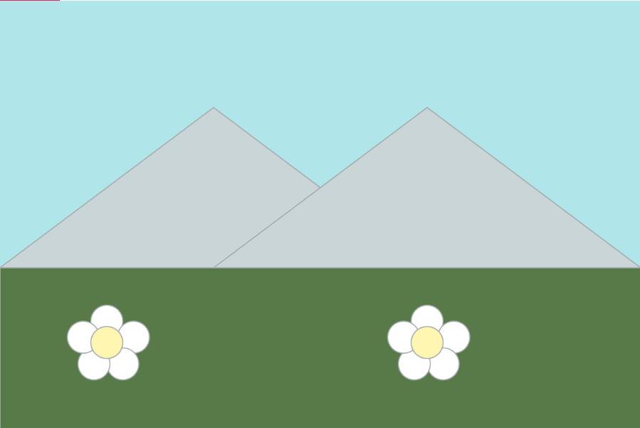

p5.js Landscape and Self Portrait
Program: p5.js. This was a very interesting software to try and use. Having to do math and measure out where my shapes need to go by pixels wasn't something I was used to. It was a very interesting experience trying to put together a mountain landscape and something that kind of conveyed the idea of me. I had a lot of fun doing it, but the most challenging part was most definitely trying to create the transparency effect on the glasses. That was something I spent a lot of time looking up and trying to figure out. I may try my hand at this program again as I find it a very neat way to create art.


return home